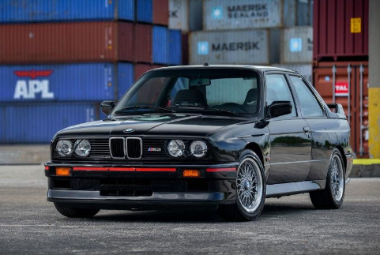

Bayerische Motoren Werke AG (BMW) — გერმანული კომპანია, რომელიც ავტომობილებს, მოტოციკლებსა და ძრავებს აწარმოებს. მისი შტაბ-ბინა მდებარეობს მიუნხენში. „ბეემვეს“ აქციები ფრანკფურტის საფონდო ბირჟაზე განლაგებულ DAX-ზე იყიდება. დაარსების ისტორია „ოთხი ცილინდრი“ - BMW-ს შტაბ-ბინა მიუნხენში. მის წინ კი გასაღების ფორმის BMW-ს მუზეუმია კომპანიის დაარსების ოფიციალურ თარიღად 1917 წლის 21 ივლისი ითვლება, თუმცა „ბეემვეს“ ისტორია რამდენიმე წლით ადრე დაიწყო. 1913 წელს მიუნხენში ორი პატარა ფირმა გამოჩნდა, რომლებსაც სათავეში კარლ რაპი და გუსტავ ოტო (იმ ნიკოლაუს ოტოს შვილი, რომელმაც შიდა წვის ძრავა შექმნა) ედგნენ. აღნიშნული ორი ფირმა პირველი მსოფლიო ომის დროს იძულებით გაერთიანდა და თვითმფრინავის ძრავების გამოშვება დაიწყო. 1916 წელს კომპანიამ სახელი გადაირქვა და „ბაირიშე მოტორენ ვერკე“ ეწოდა. 1917 წელს „ბეემვეს“ ემბლემაც შემუშავდა – მოტრიალე პროპელერის სიმბოლო. ამავე წელს კომპანიის მთავარმა ინჟინერმა, მაქს ფრიცმა 6-ცილინდრიანი საავიაციო ძრავა – ტურ-3ა შექმნა, შემდეგ კი – მოტორ-4, რომლითაც 1919 წელს ფრანც დიმერმა მსოფლიო რეკორდი დაამყარა სიმაღლეზე ხტომაში, როცა ცაში 9 670 მეტრზე ავიდა.
 back